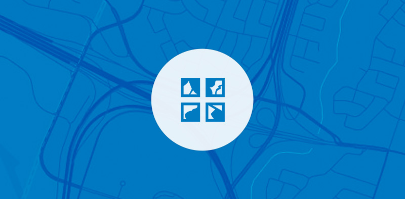

Build 3D web mapping apps
Version 4.0 of the ArcGIS API for JavaScript represents the first release in a whole new edition of the Javascript API that integrates 2D and 3D into a single easy to use and powerful API. 4.0 allows you to build full-featured 3D applications powered by web scenes that can include rich information layers such as terrain, basemaps, imagery, features, and 3D objects.
Learn about 4.0// Reference the JavaScript API from our CDN and you are ready to get started:
<link rel="stylesheet" href="https://js.arcgis.com/4.0/esri/css/main.css">
<script src="https://js.arcgis.com/4.0/"></script>Need to build a full-featured 2D web app with capabilities such as editing or full layer support?
Go to 3.16
Create your first app
Get started building your first app with a 2D map or a 3D scene.

Integrate with ArcGIS
Build web apps powered by web scenes and web maps to create compelling apps with a few lines of code.